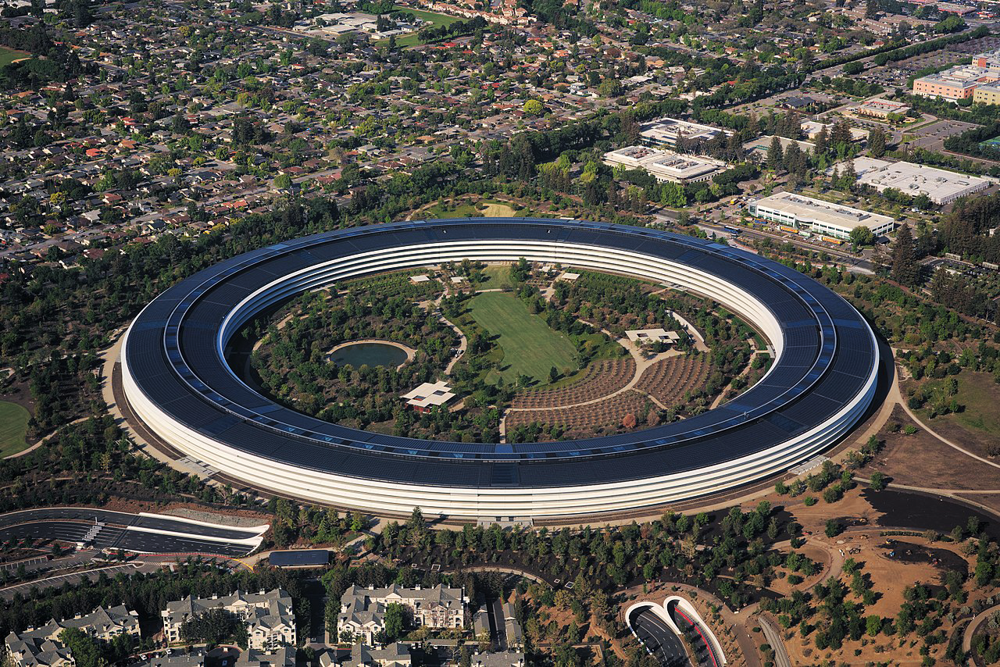
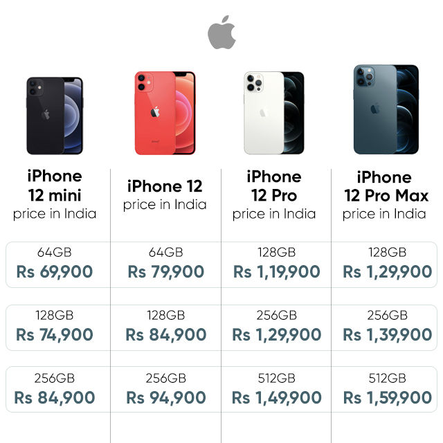

About Steve Jobs

Steven Paul Jobs(February 24, 1955 – October 5, 2011) was an American business magnate, industrial designer, investor, and media proprietor. He was the chairman, the chief executive officer (CEO), and a co-founder of Apple Inc., the chairman and majority shareholder of Pixar, a member of The Walt Disney Company's board of directors following its acquisition of Pixar, and the founder, chairman, and CEO of NeXT.
| Born |
Steven Paul Jobs
"February 24, 1955"
San Francisco
", "
California
", U.S."
|
||
|---|---|---|---|
| Died |
"October 5, 2011"
" (aged 56)"
Palo Alto, California
", U.S."
|
||
| Cause of death | Neuroendochrine cancer | ||
| Resting place | Alta Mesa Memorial Park | ||
| Occupation | |||
| Years active | 1975-2011 | ||
| Known for |
|
||
| Net worth | "US$7 billion (September 2011)" [1] | ||
| Title | |||
| Board member of | |||
| Spouse(s) | |||
| Partner(s) | Chrisann Brennan " (1972-1977)" | ||
| Children | "4, including " Lisa Brennan-Jobs | ||
| Relatives | Mona Simpson " (sister)" | ||
| "CEO of " Apple | |||
|
In office
"September 16, 1997 - August 24, 2011" |
|||
| Preceded by | Gil Amelio | ||
| Succeeded by | Tim Cook | ||
|  Apple's Headquarters | |||
Iphone 12 Pro Max

The iPhone 12 Pro Max naturally commands a steep premium too. If you are thinking of going all-out on your iPhone purchase this year, then you should probably look at spending a bit more and getting the iPhone 12 Pro Max instead of any other mobile phones.
iPhone 12 Pro Max pricing and variants
The iPhone 12 Pro Max is available in the same storage variants and colours as the iPhone 12 Pro, starting with 128GB for Rs. 1,29,900, 256GB for Rs. 1,39,900, and 512GB for Rs. 1,59,900. There's roughly a Rs. 10,000 premium over all variants of the iPhone 12 Pro in India. Apple sent me the same Pacific Blue colour again, but both models are also available in Graphite, Silver and Gold.
iPhone 12 Pro Max display
One of the main differences between the iPhone 12 Pro Max and the iPhone 12 Pro is their physical size. The iPhone 12 Pro Max is Apple's largest iPhone yet, and its size seems amplified due to the flattened edges of the top and bottom glass, and the flat frame. It's taller and wider than last year's iPhone 11 Pro Max, but slimmer at 7.4mm than any previous ‘Max' model. It's a heavy phone too, weighing 226g. The build quality is fantastic, just like with the iPhone 12 Pro. You get a stainless steel frame running around all sides, the usual array of buttons and ports for an iPhone, and a frosted glass back panel. Thanks to its physical size, the iPhone 12 Pro Max also has the largest display ever used in an iPhone. It's a 6.7-inch OLED Super Retina XDR OLED panel, up from the 6.5 inches of last year's Max model. It also has a higher resolution of 2,778x1,284 pixels compared to the iPhone 12 Pro, resulting in a slightly higher pixel density. However, everything else including the brightness level, contrast ratio, colour gamut, etc are identical.
iPhone 12 Pro Max cameras

Jumping to the cameras, where Apple has made some major upgrades over the iPhone 12 Pro, on paper anyway. The main rear camera is new and is said to have a 47 percent larger sensor, with bigger (1.7 micrometer) pixels for improved low-light performance compared to the iPhone 12 Pro. Apple has also used sensor-shift stabilisation, which means the sensor itself can move slightly on its axes to compensate for hand shakes, instead of the lens moving (known as OIS). It's a first on an iPhone, but we've seen a similar implementation in the Vivo X50 Pro recently. Finally, Apple has also gone with a new telephoto camera with a longer focal length (65mm vs 52mm), so you now get 2.5x optical zoom and 12x digital zoom, compared to 2x optical and 10x digital on the iPhone 12 Pro. A side-effect of having a longer optical zoom range in a similarly sized body as the 12 Pro is that the telephoto camera's aperture has had to be downgraded to a narrower f/2.2 from f/2.0, but Apple says it has made up for this in other ways. Other than these changes, the rest of the camera features remain the same as on the iPhone 12 Pro. All the sensors are still 12 megapixels, and all support Deep Fusion, Night Mode, Night Portrait, and Smart HDR 3. The iPhone 12 Pro Max can also shoot Dolby Vision HDR videos at up to 4K 60fps.
| Good | Bad |
| Excellent build quality | uncomfortable to hold |
| Immersive display | Heats up while gaming |
| Very good battery life | Very expensive |
| Versatile cameras | |
| Speedy performance |